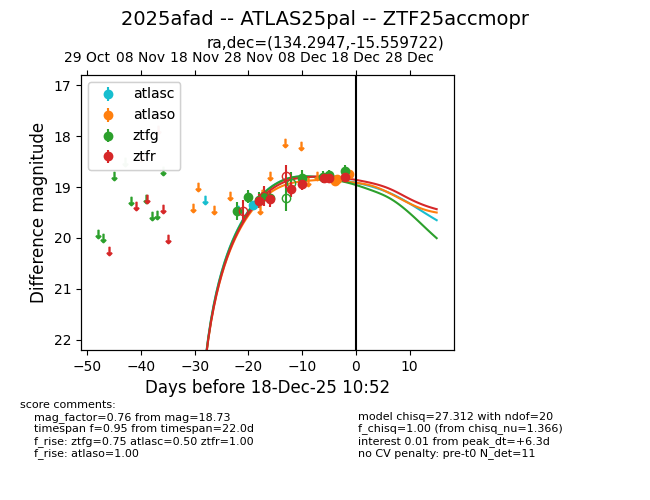
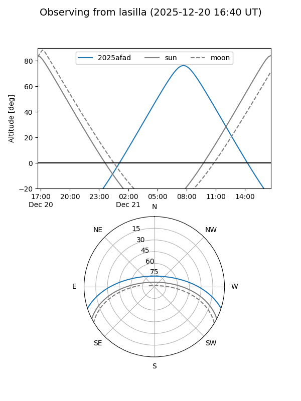
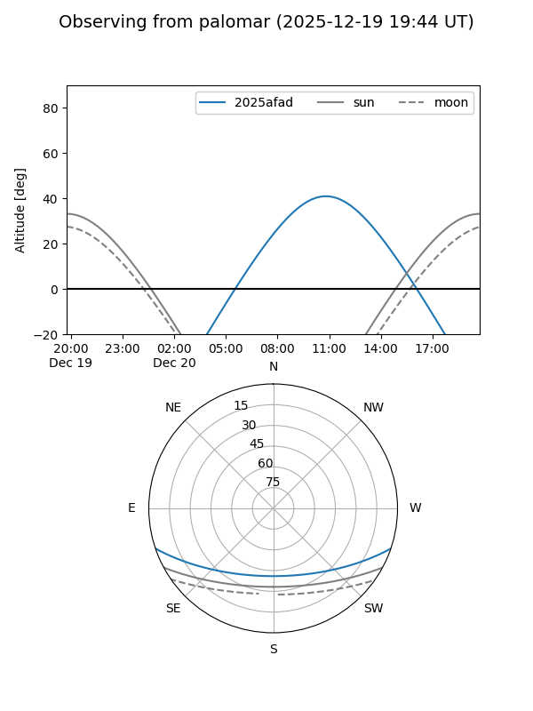
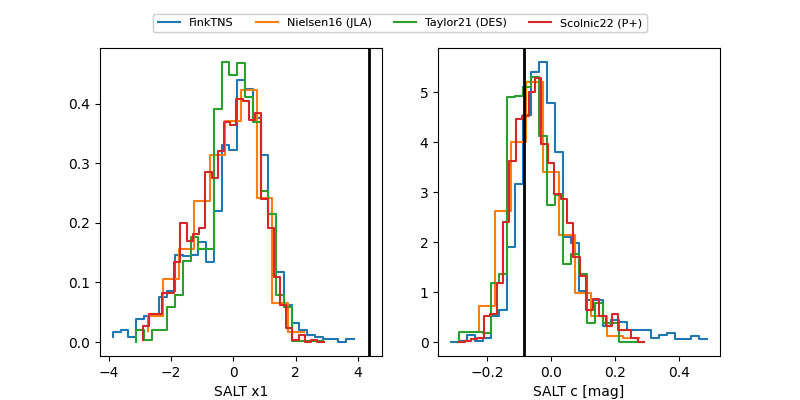

2025afad
Target 2025afad at 2025-12-29 10:11
Aliases and brokers:
FINK: fink-portal.org/ZTF25accmopr
Lasair: lasair-ztf.lsst.ac.uk/objects/ZTF25accmopr
ALeRCE: alerce.online/object/ZTF25accmopr
TNS: wis-tns.org/object/2025afad
YSE: ziggy.ucolick.org/yse/transient_detail/2025afad
alt names
ZTF25accmopr (ztf,fink_ztf)
2025afad (tns,yse)
ATLAS25pal (atlas)
Coordinates:
equatorial (ra, dec) = 134.2947,-15.55972
equatorial (HMS+DMS) = 08:57:10.73,-15:33:35.00
galactic (l, b) = (242.5788,+18.95555)
Flags:
Photometry:
last atlasc=19.35, atlaso=18.73, ztfg=18.64, ztfr=18.68
1 atlasc, 3 atlaso, 13 ztfg, 10 ztfr detections
Lightcurve

Visibility


Additional plots
